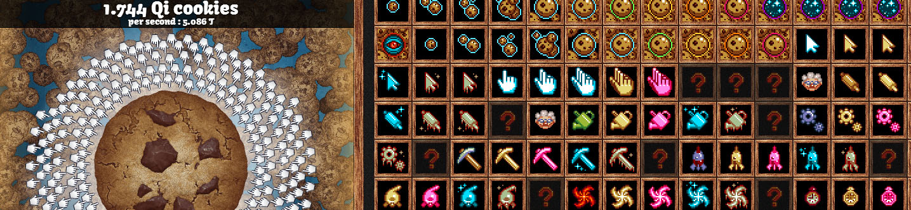
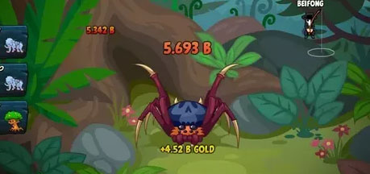

Back in 2013, Cookie Clicker(Pictured above) made Idle games popular, although there were similar games realeased before that.
What are Idle games?
What are Idle games?
Incremental games (also known as idle games, clicker games, or clicking games) are video games whose gameplay consists of the player performing simple actions such as clicking on the screen repeatedly ("grinding") to earn currency.In some games, even the clicking becomes unnecessary after a time, as the game plays itself, including in the player's absence, hence the moniker "idle game". In an incremental game, a player performs a simple action – usually clicking a button – which in turn rewards the player with a unit of currency. The player may spend their currency to purchase items or abilities that allow the player to earn currency faster or automatically, without needing to perform the initial action. A common theme is to give the player sources of time-based income displayed as "buildings", such as factories or farms.
